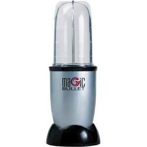
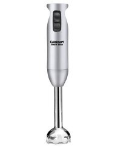
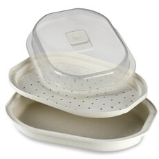

Things that make things easier
People ask me a lot. A lot. How long it takes me to cook my meals. They say it seems like I must spend forever to cook. I can see how it seems like that; but I honestly take more time posting to my site and instagram than to cook. I'm good at being deceptively fancy :p I completely understand that it is not ideal for everyone to spend an hour cooking dinner every day, and I wouldn't want to either!! My dinners take 30 minutes a day to cook for both my boyfriend and I - I also choose to cook breakfast for us every morning for about 30 minutes. Just personal preference because I enjoy fresh, hot breakfasts and dinners. All of my other meals take less than 10 minutes - ie preworkout wraps or prepped meals that I make Sunday in 2 hours and eat at work all week.I am a very busy person, like many of us are. I work full time, I workout 5-6 days a week, I go to twice-a-week chiropractor appointments, I cook for my boyfriend and I and keep the apartment clean, find time for my closest friends, and I share recipes on instagram and my site. Sooo through this, I've picked up tricks in the kitchen to SPEEEED up the cooking process!I'm actually pretty lazy and hate doing difficult things hahah. So I want to share with you these little tricks that can be a life saver.
- I. Hate. Boiling. Beets. But I love beets D; They just take foreverrrr to boil. So I usually buy these guys.
 They're presteamed and come cold and all you do is slice and eat!! Perfect.
They're presteamed and come cold and all you do is slice and eat!! Perfect.
- I buy a lot of frozen things. I seriously need a second freezer. Forrrr example - Frozen edamame, frozen broccoli, frozen pre-cooked shrimp, etc. Frozen vegetables and shrimp is the best thing ever. To eat them, I place them in a small bowl and cover it with water. Then microwave it for 2-3 minutes. Strain, and boom! "Fresh" vegetables or cooked shrimp ready in minutes. This is better than just placing it on a plate and microwaving it because often times it dries out.
- Blending something? Magic bullet or handblender.


End of discussion. The only time I use a full blender is when I need to make a smoothie that uses ice. Otherwise it's seriously wayyyy too much of a hassle. I also hate using my food processor and making a mess, so a magic bullet comes in handy here too.
- THIS THING. IT SHOULD REALLYYY be number one on my list!! It. Does. Everything!! Basically, you fill the bottom with an inch-ish of water.

Then put the second piece on, then whatever you want to cook, then the lid. And you microwave it and it "steams" vegetables, cooks fish, whatever! It's crazy. I use it to steam my asparagus or green beans during meal prep Sunday. It just takes 3-7 minutes depending on what you're cooking. And you can even steam salmon in it. It's crazy.
- No time to bake squash or sweet potatoes for 30-60 minutes? THE STEAMER. Seriously, you slice it into cubes and it just takes 6-7 minutes in the microwave as well. Get it on amazonnnnn.
- Steaming broccoli, cauliflower, or brussel sprouts? Nope. I don't wanna pull out a huge pot and lid! I use the microwave water bowl, like in bullet #2. For brussel sprouts, I throw fresh sprouts in a bowl, fill it with water, and microwave it 4.5 minutes. Strain, slice, and eat.
- I feel like everyone should know this but I didn't two years ago! So, you know you can defrost meat in the microwave? Most microwaves have a defrost option. I store most of my meat as frozen, then just microwave defrost it while I begin to chop my veggies for dinner :) Better than waiting all day for it to defrost in the fridge ._.
- This is not really something that speeds up cooking but... a neat trick when making homemade ice cream or a smoothie or something is to freeze the bowl you're about to put it in while you make it. It makes the bowl frozen too so it won't melt as fast! I hate melted ice cream or smoothies :x
That's all I can consciously think of at the moment, but I will add more as I realize them or if my boyfriend points them out!